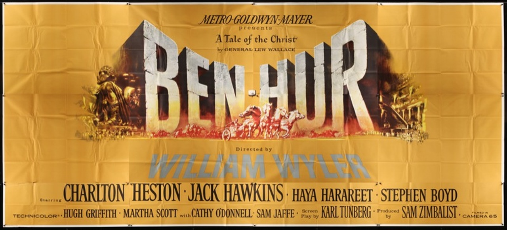
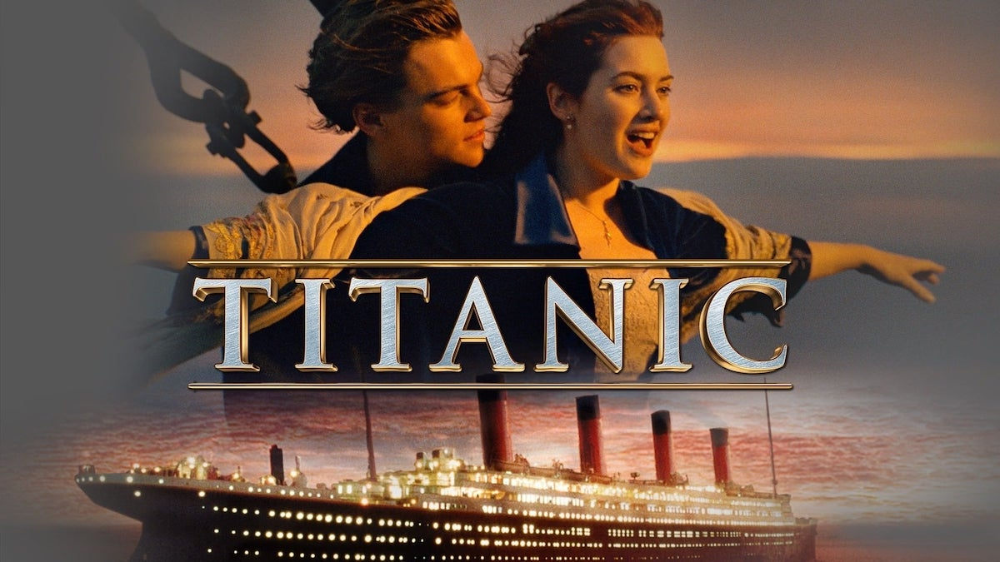
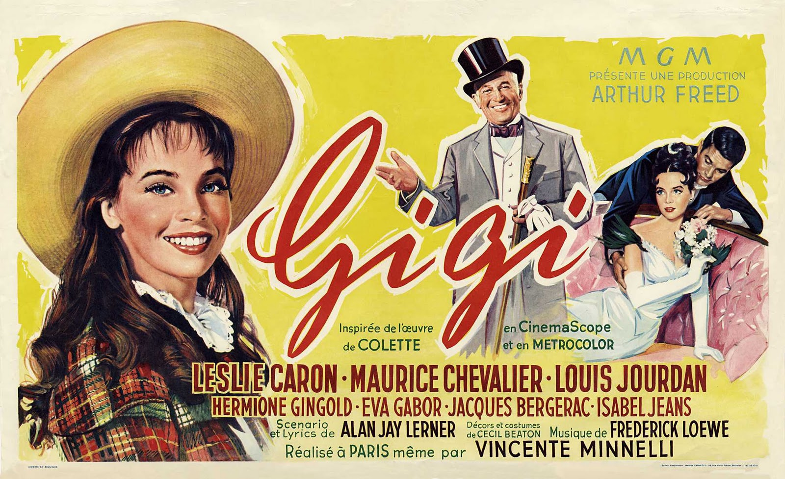

PREMI
OSCAR
OSCAR
Ben-Hur è un film del 1959 diretto da William Wyler con protagonista Charlton Heston.
È un colossal a tema storico e drammatico ed uno dei più grandi e premiati successi della storia del cinema. È ispirato all'omonimo romanzo del generale Lew Wallace, da cui erano già stati tratti due film, uno del 1907 e l'altro del 1925, divenuti punti di riferimento del cinema muto.
 2- Titanic (1997) 11 premi OscarTitanic è un film del 1997 scritto, diretto, co-prodotto e co-montato da James Cameron.
La pellicola è un colossal epico-romantico[1][2][3] di carattere storico, interpretato da Leonardo DiCaprio e Kate Winslet nei ruoli di Jack e Rose; due membri di differenti classi sociali, che s'innamorano durante il tragico viaggio inaugurale della durata di 4 giorni in mezzo all'oceano Atlantico del RMS Titanic. È, al 2021, il terzo film con maggiori incassi nella storia del cinema.
 3- Il Signore degli Anelli - Il ritorno del re (2003) 11 premi OscarIl Signore degli Anelli - Il ritorno del re (The Lord of the Rings: The Return of the King) è un film colossal del 2003 diretto da Peter Jackson.
Tratto dall'omonima terza e ultima parte del romanzo di J. R. R. Tolkien Il Signore degli Anelli. Il film, preceduto da Il Signore degli Anelli - La Compagnia dell'Anello e Il Signore degli Anelli - Le due torri, conclude la trilogia cinematografica de Il Signore degli Anelli.
 4- West Side Story (1961)
10 premi Oscar
4- West Side Story (1961)
10 premi Oscar
West Side Story è un film del 1961 diretto da Jerome Robbins e Robert Wise, tratto dall'omonimo musical ed interpretato da Natalie Wood.
Dopo 4 anni di successi e di repliche ininterrotte a Broadway, Robbins e Wise, superando non poche difficoltà, portarono sul grande schermo questo musical che contava già allora numerosissimi fan. Il dubbio che avevano i due registi era quello di non essere in grado di riproporre con la stessa intensità e freschezza visiva l'atmosfera magica dei balletti e delle canzoni del musical
 5- Gigi (1958)
9 premi Oscar
5- Gigi (1958)
9 premi Oscar
Gigi è un film del 1958 diretto da Vincente Minnelli, tratto dall'omonimo romanzo di Colette, vincitore di nove Premi Oscar, fra cui quello per il miglior film.
La colonna sonora raggiunge la prima posizione nella Billboard 200 per tre settimane.
